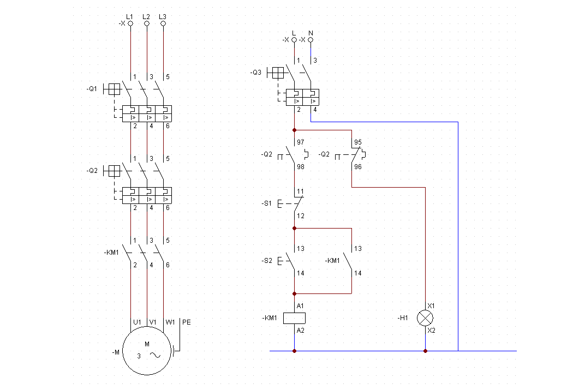

Descargar los esquemas en CADe-Simu
MARCHA-PARO
CAMBIO DE GIRO
ARRANQUE DE MOTORES:
FRENADO DE MOTORES:
VELOCIDAD MOTORES
MOTORES MONOFÁSICOS
MOTORES CC PARALELO
CONTROL MOTORES 1
MARCHA PARO
Con el pulsador S2 el motor se pone en marcha
Con el pulsador S1 o fallo térmico el motor se para.
